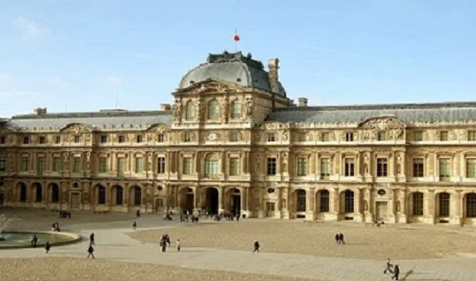
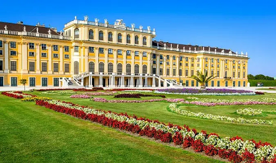

Visete o Museu do Louvre
O Museu do Louvre é o maior museu de arte do mundo e um monumento histórico em Paris, França. Ele fica na margem direita do rio Sena e tem mais de 35 mil obras de arte, incluindo a famosa Mona Lisa de Leonardo da Vinci
Visite o Palácio Belvedere
O Palácio Belvedere está entre as atrações mais populares de Viena, construído com estilo barroco no início do século 18

Visite o Palácio de Schonbrunn
O Palácio de Schönbrunn é uma das principais atrações da cidade de Viena, conta com 1.441 quartos e apartamentos, incluindo aqueles usados pela Imperatriz Maria Theresa
